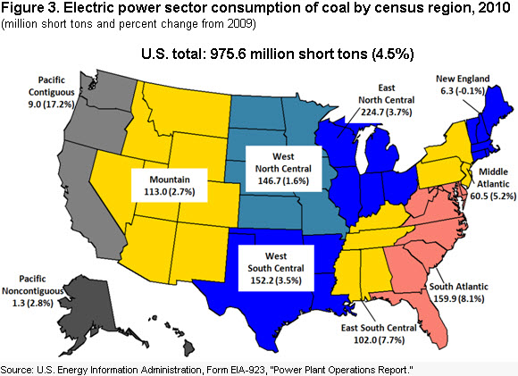
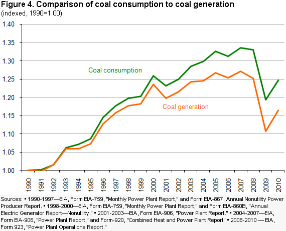
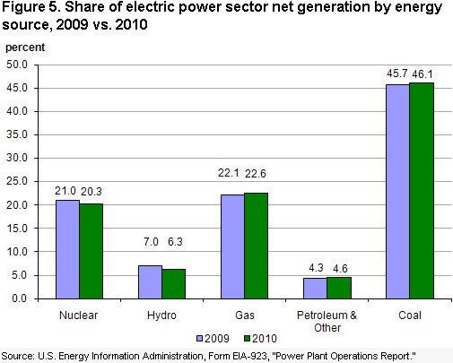
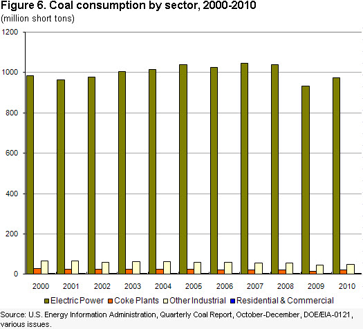

Coal
U.S. Coal Supply and Demand: 2010 Year in Review
Release Date: June 1, 2011 | Next Release Date: Periodically | full report
Consumption
Preliminary data shows that total coal consumption rebounded in 2010, increasing by 5.1 percent from the 2009 level. Total U.S. coal consumption was 1,048.3 million short tons, an increase of 50.8 million short tons, with all coal-consuming sectors, except commercial and institutional users, having higher consumption for the year. The 2010 increase in consumption, over 2009, restored about 40 percent of the previous drop in consumption in 2009 from 2008 levels. The electric power sector (electric utilities and independent power producers), which consumes about 93 percent of all coal in the U.S., is the overriding force for total domestic coal consumption. In 2010, the turnaround in the economy led to a large increase in coal consumption for the sector. Coal consumption in the electric power sector increased by 4.5 percent or 42.0 million short tons to end 2010 at 975.6 million short tons 
Figure Data(Figure 3), while coal-based electricity generation in kilowatt hours increased at a slightly higher rate of 5.2 percent. The higher rate of production growth occurred because power plants consumed more high-Btu bituminous coal purchased from the Interior production region and out of stocks in areas predominantly burning bituminous coal to generate electricity (Figure 4.) (Note: Graph shows both tons of coal consumed in the electric power sector and the amount of coal-generated kilowatt hours indexed to 1990, i.e., values for the data were set to 1 for 1990. 1990 was the year that the Clean Air Act Amendments were passed.)
Figure Data
{kind=link}
{kind=link}
Nationally, total generation in the electric power sector increased in 2010 by 4.2 percent. Preliminary data shows that nuclear power generation increased in 2010 by 1 percent. Coal, natural gas, and petroleum and other sources had increases of 5.2, 6.8 and 13.2 percent in their respective generation levels in 2010, with coal generation providing the largest increase in the number of kilowatt-hours. Net generation at hydroelectric plants declined by 5.9 percent in 2010 over 2009, due to low water levels both in the Pacific Northwest and at TVA dams. The cost of natural gas delivered to the electric power sector increased slightly from $4.74 per million Btu in 2009 to $5.08 per million Btu in 2010, a slightly larger percentage increase than for coal against which it competes. Coal delivered to the electric power sector rose from $2.21 in 2009 to $2.26 per million Btu in 2010. With more-or-less steady prices prevailing, both natural gas and coal raised their shares in net electricity generation in 2010 over 2009 (Figure 5).

Figure Data
{kind=link}
The economy and the weather (as measured by heating and cooling degree-days) are among the main factors that drive changes in total electricity demand in the U.S. In 2010, the economy expanded as the real Gross Domestic Product (GDP) of the U.S. increased by 2.7 percent from 2009. The weather was also a factor in the increase of total electricity generation in 2010. Some regions with high reliance on coal for electricity generation--South Atlantic, East South Central, West South Central and Mountain--had colder winters in 2010 than in 2009, and higher heating demands. In contrast, New England, with low electricity generation by coal, had a warmer winter as did the Middle Atlantic, East North Central, and West North Central regions. On balance, accounting for the relative amounts of coal generation and the pattern of weather, the net effect was relatively more generation by coal in 2010 compared to 2009. The summer weather in 2010 was warmer than in 2009 in every region of the U.S. except the Mountain and Pacific regions, which resulted in higher summer generation to run air-conditioners.
Of the nine Census Divisions (Table 3), coal is a minor component (less than 20 percent) in the fuel mix for electricity generation in two divisions, New England and Pacific, and a major component (more than 50 percent) in four divisions, East North Central, West North Central, East South Central, and Mountain. In two other divisions, coal is one of two main fuel sources for the electric power sector. In the Middle Atlantic, coal competes with nuclear power for dominance, while in the West South Central coal competes with natural gas. In the South Atlantic Division fuel use for electricity generation has coal dominating (accounting for about 47 percent of net generation) but with a large combined share for natural gas and nuclear (49 percent) about evenly split between those two fuels. In 2010, all Census Divisions, except the Mountain and Pacific, had an increase in total net electricity generation. Except for New England, coal consumption for the electric power sector grew in 2010. Total coal consumption in the electric power sector rose by 42 million short tons in 2010, with two of the Census Divisions, the South Atlantic and the East South Central, accounting for about half of the gain.
The South Atlantic Census Division typically accounts for about 20 percent of total U.S. electricity generation. Coal is the primary fuel for electricity generation. In 2010 total generation in the South Atlantic Census Division increased by 6.4 percent (Table 3) while coal-based generation increased by 8.7 percent. The increase in coal-based electricity generation in 2010 in the Division resulted in an increase in coal consumption of 11.9 million short tons, up 8.1 percent to end the year at 159.9 million short tons. As a consequence of the increase in coal consumption in the Division, coal stocks at power plants decreased in 2010 by 19.7 percent to end the year at 32.3 million short tons. This decrease of 7.9 million short tons in the Division accounted for more than half of the total decrease in coal stocks in the electric power sector at the national level. Natural gas generation increased in the Division in 2010 by 14.5 percent. The South Atlantic's other large generation sector, nuclear, declined by 3 percent, due largely to refueling outages. The shares of both coal and natural gas generation increased to fill declining generation by hydroelectric and nuclear plants. In 2009, low natural gas prices led to switching out of coal. Those low natural gas prices continued into 2010 but stayed close in relative value to coal prices. The 2010 rebound in generation propelled by economic recovery, without further price advantage to natural gas, gave back increased generation in both coal and natural gas
In 2010, total generation in the East North Central Census Division grew by 6.3 percent as all fuels, except hydroelectric, showed gains over 2009. The two largest generating fuels coal and nuclear provided 92 percent of the Division's total generation. The three remaining fuels hydroelectric, natural gas, and petroleum and other had a net change in generation that was about one-half the size of the coal and nuclear gain. Coal generally accounts for about 70 percent of generation in the Division, and this makes it the single largest coal consuming Census Division for the electric power sector, usually accounting for just under one-quarter of total U.S. coal consumption in the electric power sector. The increase in coal-based generation in the Division in 2010 resulted in an increase in coal consumption of 8 million short tons or an increase of 3.7 percent.
In 2010, additions by coal- and natural-gas-based generation in the East South Central Division represented almost all of the gains in 2010 over 2009. The share of coal in the Division's generation was about 55 percent and that of natural gas about 20 percent. Lower generation at hydroelectric dams, down by 22 percent due to low water levels, was more than offset by the generation gains for coal and natural gas as total generation for the Division grew by 7.3%. Coal consumption to generate electricity increased by 7.3 million short tons, 2010 over 2009, making the East South Central Division the third largest gainer after the South Atlantic Division in 2010.
Total generation in the Middle Atlantic Census Division in 2010 increased by 4.4 percent, with hydroelectric- and nuclear-based generation showing declines for the year. These losses in generation were more than offset by coal- and natural-gas-based generation gains. Due to faster growth in natural gas, its share in the Division's total generation edged up from 22 to 24 percent, while coal's share remained at about 30 percent..
In the West South Central Census Division coal competes with natural gas as the primary source for electric power generation, with each accounting for about 40 percent of the Division's generation. Total generation in 2010 in the Division's electric power sector increased by 3 percent. Increases in coal generation accounted for about 53% of this growth while petroleum and other accounted for an additional 45 percent of the overall gain. Generation by natural gas remained steady near its 2009 level. Total coal consumption in 2010 for the Division's electric power sector increased by 5.1 million short tons, or 3.5 percent, ending the year at a total of 152.2 million short tons.
Over half of the electricity generated in the Mountain Census Division is derived from coal. In 2010 total generation in the Division declined by 0.7 percent, but coal-based generation rose by 2.7 percent and petroleum and other sources, increased by 24.3 percent. The decline in generation by hydroelectric (-5.4 percent) and natural gas generation (-10.6 percent) more than offset increases by other fuels. Total coal consumption in the electric power sector in the Division increased in 2010, ending the year at 113 million short tons, an increase of 3 million short tons.
In the West North Central Census Division coal is the dominant source for electric power generation accounting for about 70 percent of the Division's generation. Total generation in 2010 in the electric power sector in the Division grew by 5.4 percent. Generation by every fuel type increased. Total coal consumption in 2010 for the electric power sector in the Division increased by 2.4 million short tons, or 1.6 percent, ending the year at a total of 146.7 million short tons.
Total electric power sector generation in the New England Census Division increased in 2010 by 6.6 percent, while coal-based generation declined by 0.9 percent. New England was the only census division that used less coal in 2010 than in 2009 for generating electric power. The growth in natural gas and nuclear generation propelled the Division to its gain in total generation. Coal accounts for less than one-eighth of total generation in the Division and in 2010 total coal consumption for electricity generation decreased by 100 thousand short tons, ending the year at a total of 6.3 million short tons.
Total generation in the Pacific Census Division in 2010 decreased by 1.8 percent, while coal-based generation increased by 14.6 percent. The Pacific and Mountain Census Divisions were the only divisions with lower levels of electricity generated in 2010 than in 2009. Coal accounts for less than five percent of total generation in the Division and in 2010 total coal consumption for electricity generation grew by 15.7 percent to end the year at 10.3 million short tons.
Coal consumption in the non-electric power sector (comprised of other industrial, coking coal, and the commercial and institutional sectors) increased in 2010 (Figure 6) 
Figure Dataas the economy rebounded. Coal consumed by Other Industrial went up by 3.2 million tons or 7.1 percent, reaching 48.5 million short tons. Coal consumption at coke plants increased by 5.8 million short tons, an increase of 37.6 percent. Coal consumed by commercial and institutional users declined slightly from 3.2 to 3.1 million short tons, 2010 over 2009. In 2010, except for one small coal consuming sector-- transportation equipment manufacturing--all manufacturing sectors (as defined by EIA at the 3-digit level of the North American Industry Classification System) had higher coal consumption. However, the long-term trend for coal consumption in the manufacturing sector, starting from the late 1980's, has been down. In 1988, coal consumption hit a peak over the preceding 20 years of 76.3 million short tons. Since then it has been declining at an average annual rate of 2 percent.
{kind=link}